Im vorliegenden Manual wird die Funktionsweise von OptiSeat beschrieben und für die verschiedenen Register-Karten (Tabs) die vorhandenen Buttons und die damit verbundenen Funktionen erläutert.
In diesem Tab können Sie die Datenbank mit den Personen-Informationen verwalten.
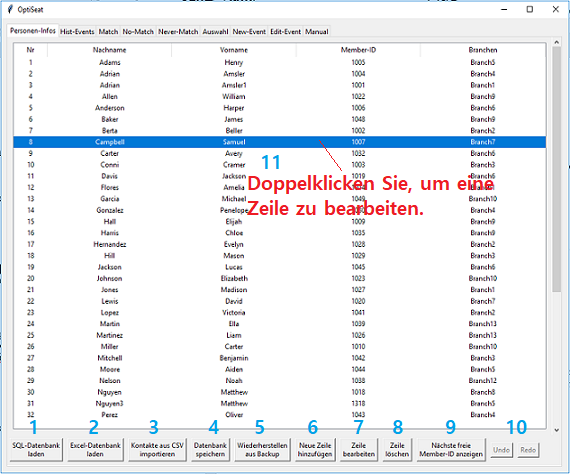Lädt die Sqlite3-Datenbankdatei ([APP_ROOT_PATH]/data/local.db) und aktualisiert die Seite. Standardmässig zeigt die Seite den Inhalt der Datenbankdatei (falls vorhanden) an, wenn die Registerkarte ausgewählt wird.
Lädt eine Datenbankdatei im Excel-Format und aktualisiert die Seite. Die Excel-Datei ist ein alternatives Datenbankformat, das nicht nur die Tabelle der Mitglieder, sondern auch Informationen über Match/No-Match/Never-Match und historische Events mit Sitzplätzen enthält.
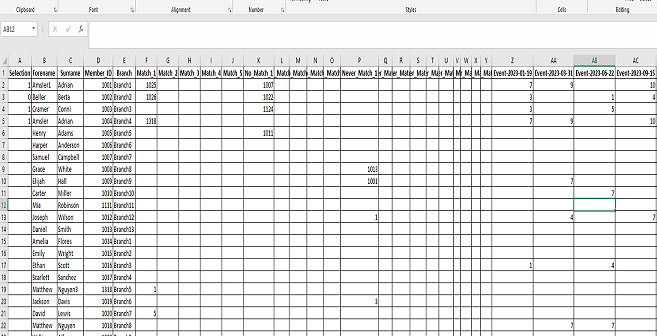Lädt eine CSV-Datei mit Informationen über neue Mitglieder und fügt die entsprechenden Datensätze zur bestehenden Tabelle hinzu.
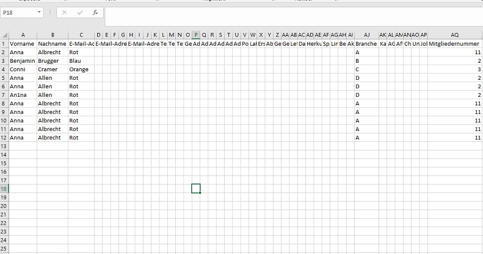Saves the modified table(s) onto Sqlite3 database. If the current page was loaded from Excel-format database, all related tables(members, match/no-match information and events) are saved. Otherwise, only the table of members is saved.
Lädt eine frühere Sqlite3-Datenbankdatei aus dem Sicherungsverzeichnis. ([APP_ROOT_PATH]/bkup) Sie können den Zeitpunkt der wieder herzustellenden früheren Datenbank im Pop-up-Dialog auswählen.

Fügt eine neue Zeile hinzu, in der eine neue Person eingegeben werden kann. Sie können die Informationen für ein neues Mitglied im Pop-up-Dialog eingeben und auf die Schaltfläche "Hinzufügen" klicken.
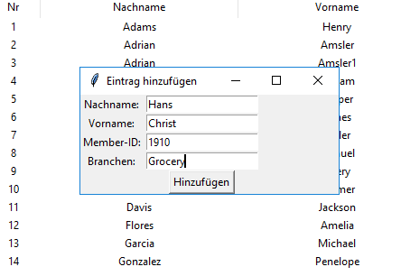Ändert die Informationen einer bestehenden Person in der ausgewählten Zeile. Sie können die Informationen im Pop-up-Dialog ändern und auf die Schaltfläche "Speichern" klicken, um sie zu übernehmen.
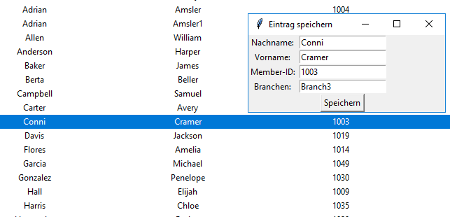Entfernt ein Mitglied mit der ausgewählten Zeile.
Zeigt im Pop-up-Dialog die nächste freie Member-ID an, die an ein neues Mitglied vergeben werden kann.
Rückwärts-/Vorwärts-Aktionen.
Auch mit einem Doppelklick kann eine Zeile bearbeitet werden.
Auf dieser Registerkarte können Sie den Eventsverlauf mit Sitzplatzinformationen einsehen und bearbeiten. Sie können auch manuell eine neue Event und Sitzordnung hinzufügen.
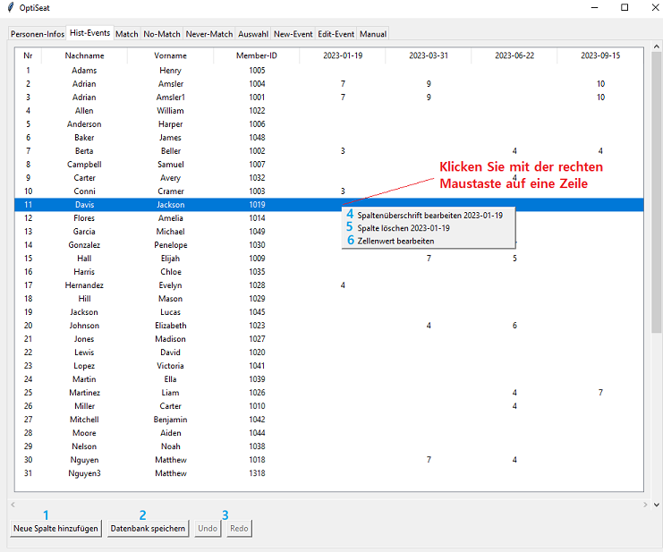Fügt eine neue Event hinzu. Sie sollten das Datum einer neuen Event im Pop-up-Dialog eingeben.
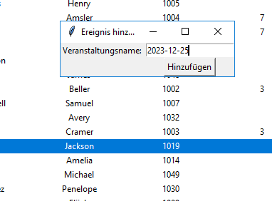Speichert die geänderte Tabelle in der Sqlite3-Datenbank.
Rückwärts-/Vorwärts-Aktionen.
Ändert das Datum eines Events, das der ausgewählten Zelle entspricht.
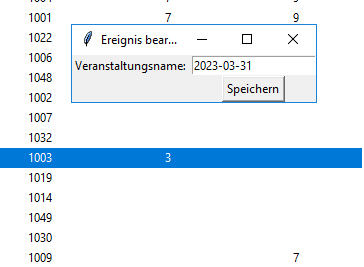Entfernt ein Event, das der ausgewählten Zelle entspricht.
Ändert die Anzahl der Tische für ein Mitglied und ein Event, das der ausgewählten Zelle entspricht.
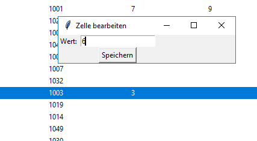Auf diesen Tabs können Sie die Beziehungen zwischen Mitgliedern verwalten. Match bedeutet, dass Personen nach Möglichkeit am gleichen Tisch platziert werden. Mit No-Match kann temporär (für den nächsten Event) verhindert werden, dass zwei Personen zusammen platziert werden. Never-Match ist ähnlich wie No-Match, ist aber eher für eine längerfristige Vermeidung von Personen-Verknüpfungen gedacht.
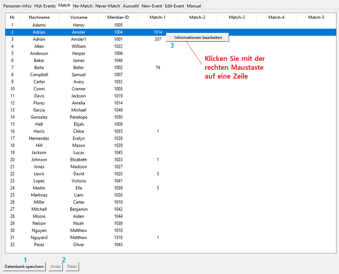Speichert die geänderte Tabelle in der Sqlite3-Datenbank.
Rückwärts-/Vorwärts-Aktionen.
Ändert/Löscht die Beziehung, die der ausgewählten Zelle entspricht. Sie können ein Mitglied aus der Dropdown-Liste im Pop-up-Dialog auswählen, das mit dem ausgewählten Mitglied in Beziehung steht. Wenn Sie "--Leer--" aus der Dropdown-Liste wählen, wird die entsprechende Beziehung gelöscht. Jede Beziehung kann mit einem Kommentar, d.h. einer kurzen Beschreibung, versehen werden. Sie können den Kommentar im Dialogfeld hinzufügen oder bearbeiten.
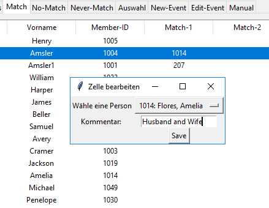Auf dieser Registerkarte können Sie die Auswahl von Personen für die Planung eines Events verwalten.
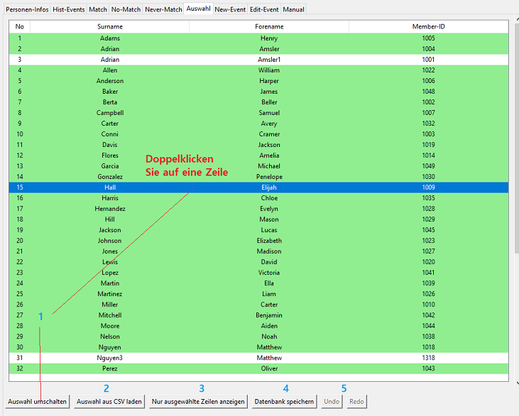Schaltet den Auswahlstatus eines entsprechenden Mitglieds um. Grüner Hintergrund bedeutet ausgewählt.
Liest eine CSV-Datei mit besuchten Mitgliedern und aktualisiert die Seite.
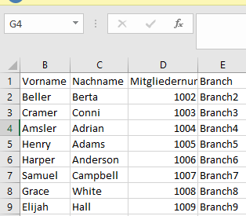Schaltet den Visualisierungsmodus der Seite um, dass nur ausgewählte Mitgliederzeilen oder alle Mitgliederzeilen angezeigt werden.
Speichert die geänderte Tabelle in der Sqlite3-Datenbank.
Rückwärts-/Vorwärts-Aktionen.
Auf dieser Registerkarte können Sie eine Sitzordnung für eine neue Event erstellen und die Event hochladen.
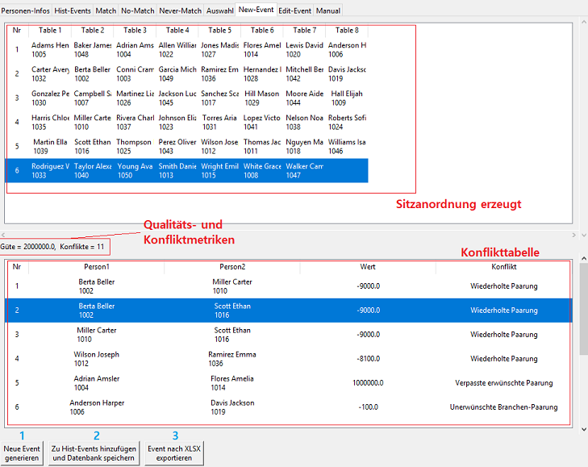Erzeugt eine Sitzordnung mit Hilfe des Evolutionären Algorithmus. Das Ergebnis ist die bestmögliche Lösung einer Sitzordnung.
Lädt einen neuen Event mit der generierten Sitzordnung. Sie sollten das Datum eines neuen Events im Pop-up-Dialog eingeben. Das Format lautet: YYYY-MM-DD
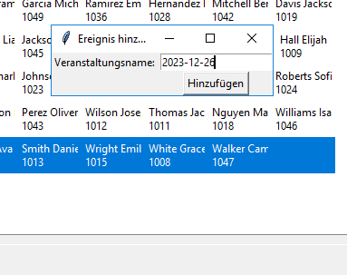Gibt eine Excel-Datei mit der generierten Sitzordnung aus.
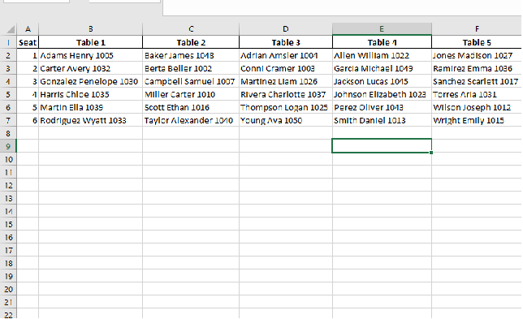In dieser Registerkarte können Sie die Sitzordnung für einen unter Hist-Events existierenden Event bearbeiten.
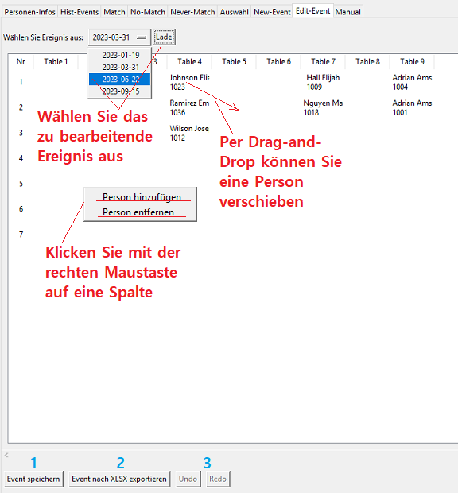Speichert die geänderte Sitzordnung in der Sqlite3-Datenbank.
Gibt eine Excel-Datei mit der aktuellen Sitzordnung aus.
Rückwärts-/Vorwärts-Aktionen.